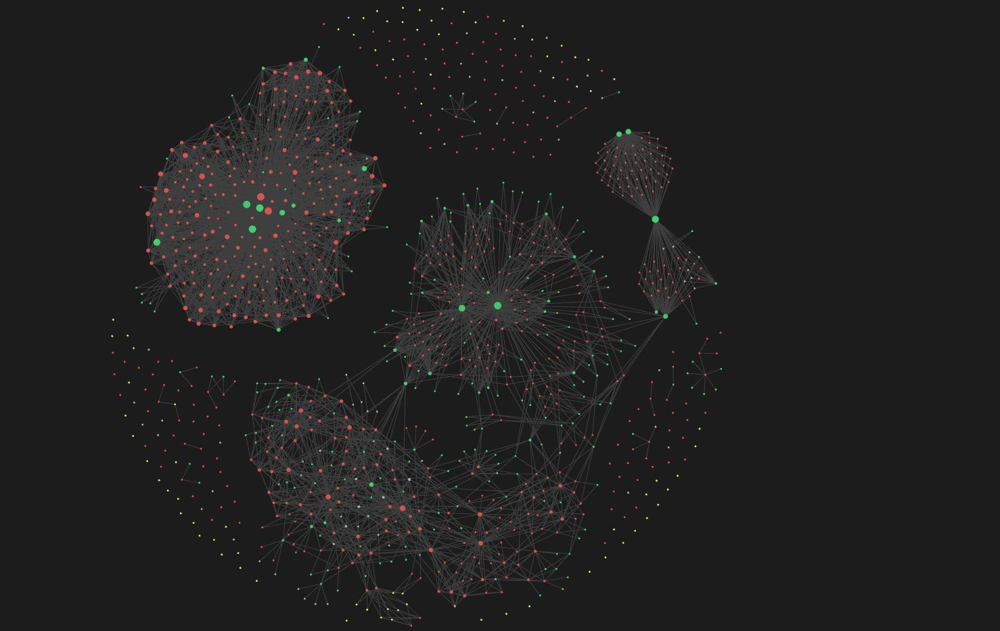

OBSIDIAN · PLUGIN · MCP
Repo Notebook für Obsidian
Ein Obsidian-Plugin, das Repo Notebook in deinen eigenen Vault bringt, mit BRAT-Releases und einer MCP-Anbindung, damit KI-Assistenten direkt mit deinen Notizen arbeiten können.
ERGEBNIS
Repo-Wissen und eine KI-Anbindung (MCP) direkt in deinem Obsidian-Vault, mit BRAT-Releases.

01 DAS PROBLEM
Viele Maker leben in Obsidian. Eine separate Desktop-App ist dann ein Ort zu viel. Das Wissen über Repositories gehört neben deine anderen Notizen — durchsuchbar, verlinkbar und deins.
02 WAS ES TUT
- Alles in deinem Vault
- Repositories werden normale Markdown-Notizen mit Frontmatter. Sie funktionieren mit deinen bestehenden Tags, Links und der Graph View.
- BRAT-Releases
- Installieren und updaten über BRAT, ohne auf den offiziellen Community-Store zu warten. Schnelle Iteration mit echten Nutzern.
- MCP-Anbindung
- Ein MCP-Server macht den Vault für KI-Assistenten wie Claude erreichbar: in deinen Repo-Notizen suchen, Zusammenfassungen abrufen, Vorschläge hinzufügen lassen.
- Dasselbe Gehirn wie Repo Notebook
- Die Analyse- und Vorschlagslogik wird mit der Desktop-App geteilt, damit beide dieselbe Qualität liefern.
03 WAS ICH DARAUS GELERNT HABE
Ein Plugin zu bauen zwingt dich, deinen Kern klein und übertragbar zu machen. Was in der Desktop-App ‚von selbst‘ lief, musste hier explizit und testbar werden — und davon wurde auch die Desktop-App besser.
INTERESSE?
Lass uns reden.
Sag mir, was du davon hältst — oder was du damit machen würdest.